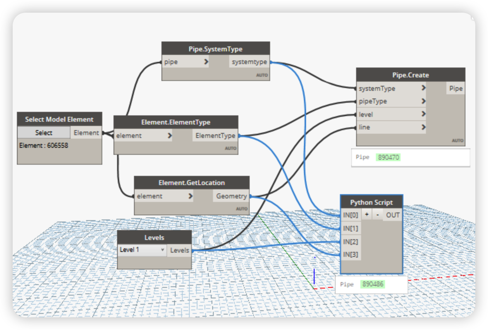

Python Script use OpenMEP
OpenMEP allow us to use Python to create MEP elements. This is a very powerful feature that allows us to create MEP elements in a very flexible way. In this section, we will learn how to use Python to create MEP elements. To get started write python script with OpenMEP, we need to install OpenMEP package. OpenMEP package is available at Latest Release, and then let follow the instruction to install OpenMEP package at How to install OpenMEP package.
Now, when we open Dynamo Revit, we can see OpenMEP package in the library, let start with the first example. We will try import library first:
# Load the Python Standard and DesignScript Libraries
import sys
import clr
clr.AddReference('OpenMEP')
import OpenMEP
from OpenMEP.Element import Duct as d
OUT =dir(d)
Now, let try to create a Pipe with Python use OpenMEP package.
# Load the Python Standard and DesignScript Libraries
import sys
import clr
clr.AddReference('OpenMEP')
import OpenMEP
from OpenMEP.Element import Pipe as p
systemType = IN[0]
pipeType = IN[1]
level = IN[2]
line = IN[3]
OUT = p.Create(systemType,pipeType,level,line)
